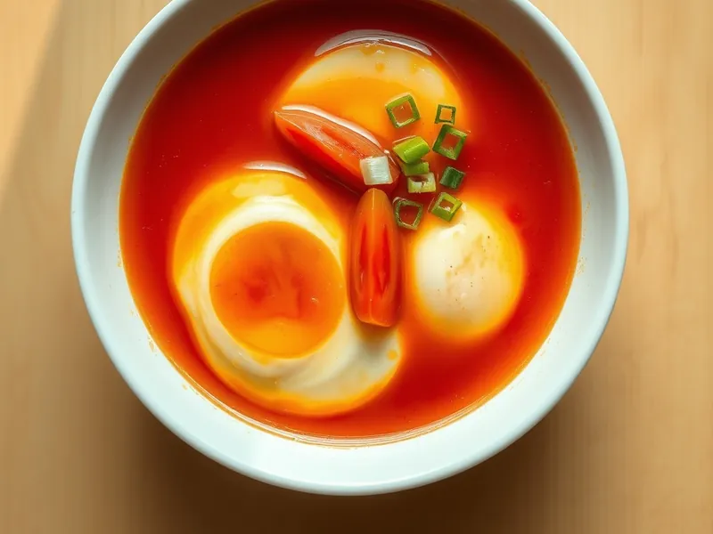

Фото: Иллюстрация ИИ, Cloudflare Workers AI
Китайский суп с яйцом и помидорами
Лёгкий томатный суп с яичными хлопьями, который готовится за 15 минут
15 мин3 порц.183 ккал на порциюБ 9 · Ж 12 · У 10Азиатская кухня
Открыть в приложении: порции, таймеры, список покупок
Продукты на 3 порц.
- Помидоры3 шт
- Яйцо куриное3 шт
- Растительное масло1 ст. л.
- Бульонный кубик1 шт
- Вода800 мл
- Крахмал1 ст. л.
- Соевый соус1 ст. л.
- Зелёный лук20 г
- Кунжутное масло по желанию1 ч. л.
- Соль1 щеп.
Как готовить
- Нарежьте помидоры дольками, зелёный лук колечками, яйца взбейте вилкой с щепоткой соли.
- Обжарьте помидоры в масле на среднем огне 3 минуты, пока не пустят сок и не начнут разваливаться.
- Влейте воду, раскрошите бульонный кубик, добавьте соевый соус и варите 5 минут после закипания.
- Разведите крахмал в 3 ст. л. холодной воды и влейте в суп тонкой струйкой, помешивая. Через минуту суп слегка загустеет.
- Влейте яйца тонкой струйкой по кругу, не мешая 20 секунд, затем один раз размешайте, чтобы получились хлопья. Снимите с огня, добавьте кунжутное масло и зелёный лук.
Совет. Яйца вливайте в слегка кипящий суп и не мешайте сразу, тогда хлопья выйдут длинными и нежными, а не мелкой крошкой.